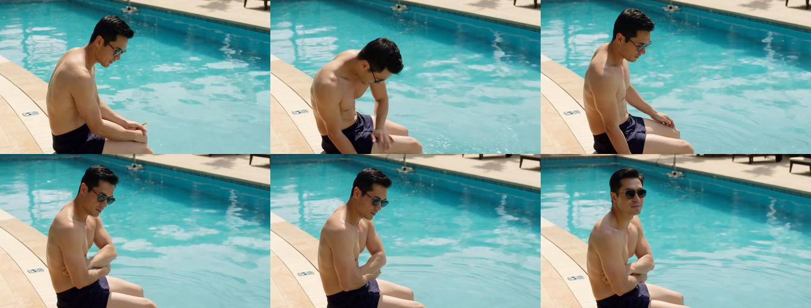

晓风谈AI
26/09/13
第二大致命暗坑场景空间割裂与机位缺乏连贯
连续播放三个片段时，观众很难建立起在同一泳池特定角落的真实空间认知。
1
泳池环境背景脱节：岸边斜坡石阶突变特写水纹，第三镜又跳至茂密树篱。
2
缺乏全局空间坐标：每个分镜独立生成，光照地砖与景深各自独立毫无延续。
3
五秒固定时长硬切：受限 121 帧截断，切分处动作跳跃缺乏自然动势过渡。
父亲碰肘揉手与池边石阶环境

避坑心得三
：连续分镜必须先定空间底图。固定全景场景作为环境先验，方能确保长故事在同一物理空间自然流转。